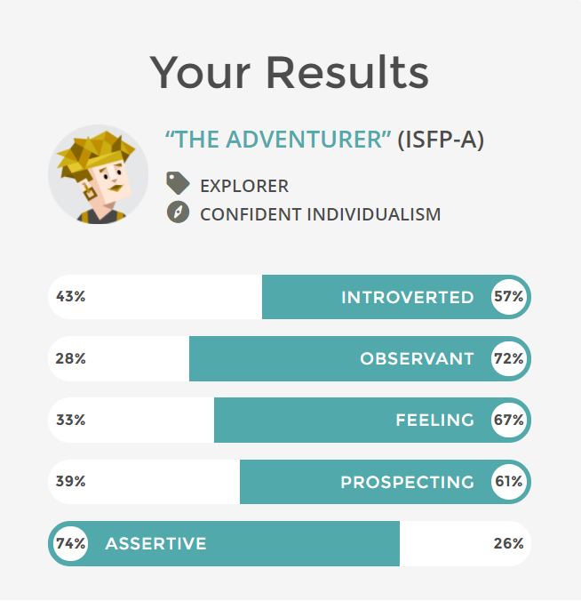
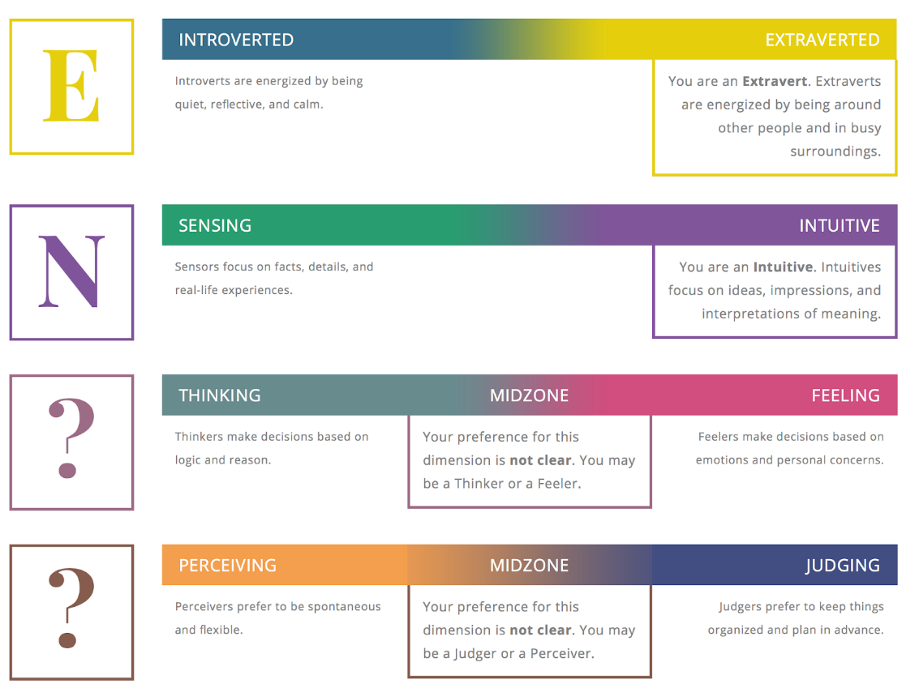

Under here will be information about each of our members
Danny Pham
Danny's Website: s3719046
About Danny:
My background is Vietnamese but i was born here in Australia. I graduated from Keysborough Secondary College, and is currently doing a course in Information Technology at RMIT. My hobbies are playing video games, playing badminton if i have the chance, watching TV shows like The Flash and Agents of Shield. I also like to take photos and building computers. Fortnite squad up. My IT Interest is in Networks and Cloud Computing. My experiences in IT has been doing Computing in Year 11 and doing work experiences in Year 10 at a computer repair shop.
Ryan Harris
Ryan's website: s3719229
About Ryan:
My background is that i’m half irish and half Australian, but i was born in Sydney, Australia, and have lived in melbourne for as long as i can remember.. I graduated from Brighton secondary college in 2017. I am currently in my first semester of studying IT at RMIT. I’d say that my hobbies would be playing video games (both PC and ps4) as well as watching tv, and by tv i mean netflix, stan and youtube. IT wise, i’d say i’m pretty interested in programming and creating programs using this, and i have had very little experience with IT in my junior years.
Jaidyn Jong
Jaidyn's Website: s3657960
About Jaidyn:
I was born and raised in Melbourne, Australia, with my background being half maltese and timorese. I completed my year 12 studies at Copperfield College, where I graduated in 2016. Currently, I am studying a bachelor’s degree in business, majoring in economics and finance and am in my second year of the course. In my downtime, I enjoy spending time playing sports and catching up with friends, working on cars, as well as playing video games and watching YouTube videos. In relation to IT, I am interested in programming, analysing databases, networking and cloud computing, where I have been taught the basics of these skills in my year 11 and 12 studies where I took IT related subjects.
Dharal Patel
Dharal's website: s3719882
About Dharal:
I was born in India then migrated to Australia at the age of 14 where I completed my VCE in Maribyrnong college 2017. Currently, I am studying Bachelor of Information Technology at RMIT. My hobbies include playing Cricket and video games and I spent most of my time watching Youtube and Netflix. My career ambition is to become the very best programmer thus I code and program in my spare time. This passion of mine started back in high school when I was taught basic coding in my IT classes.
Ahmed Al Sari
No website atm
Under Here will be our personality tests
Ryan Harris:
Myers Briggs
- Auditory: 10%
- Visual: 55%
- Tactile: 35%
Learning style test: primarily visual
Big five personality test:
This information will be valuable as it shows how best i learn, as well as an abundant amount of information about my personality, allowing them to best understand me as well as how to interact with me. These tests can also dictate how the work is done, as i prefer written and visual work.
Dharal Patel
Myer Briggs:
Learning styles:
Creativity test:
This information will be helpful to the group as it shows what is my personality, my learning style and my creativity. This information is necessary as all group members should know what can I do, how can I do and in what ways I can do. Through this all group members can know that what tasks I am capable of doing and how good I can do them and how creative I can be in completing tasks.
Danny Pham
Myer Briggs:
Learning style:
Career test:
The results depict how i best learn and the interact with my team. It portrays both strengths and weaknesses. I am more of a tactile and visual learner rather than an auditory learner. This is necessary for my team, as it shows how i understand information.
Jaidyn Jong
Myer Briggs test:
Learning style test:
Big five personality test:
These test results will be useful to my team because it displays my personality type, where my group members will be able to know what I am and am not so capable of doing in the project. The results also show how I am able to comprehend and understand information presented to me, which may also help my group members and myself in understanding new information. I am therefore able to play a role within my team where I am best suited based on my test results, such as being the team’s information organiser.